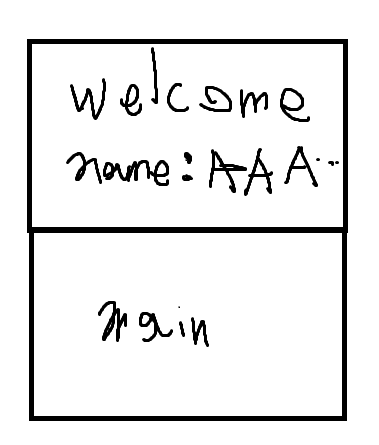
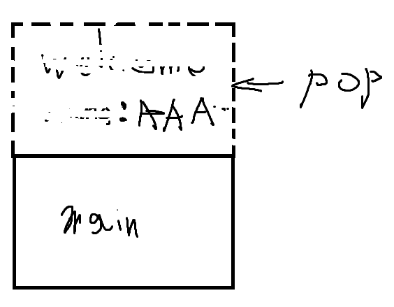
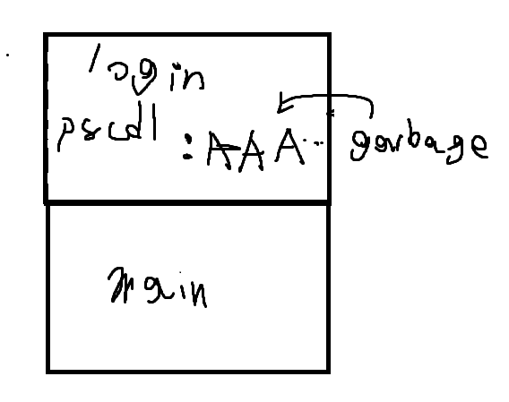

상황과 목표
컴파일 경고에서 scanf가 int 포인터 대신 int 값을 받는 것을 확인했습니다. 초기화되지 않은 passcode 변수가 이전 함수의 입력 버퍼와 같은 스택 공간을 사용한다면, 입력으로 다음 함수의 값을 정할 수 있겠다고 생각했습니다.
scanf("%100s", name); // welcome의 이름 입력
scanf("%d", passcode1); // login: 주소 연산자 누락
당시 그린 스택 그림
| welcome 입력 | welcome 반환 | login에서 스택 재사용 |
|---|



GitHub 원문에 포함된 그림 세 장. 처음 세운 가설을 그림으로 정리한 기록
입력 제한에 막혀 바꾼 방법
name 시작부터 passcode1까지 96바이트, passcode2까지 100바이트였습니다. 두 변수 모두를 제어하려면 104바이트가 필요해 이름 입력의 100바이트 제한에 걸렸습니다. 그래서 passcode1만 제어해 다음 scanf의 쓰기 주소를 지정하는 방향으로 바꿨습니다.
이후 가장 먼저 호출되는 fflush의 GOT 엔트리를 대상으로 골랐습니다. 이 바이너리의 Partial RELRO는 GOT 쓰기 가능성, No PIE는 바이너리 내부 주소 고정 여부와 연결해 각각 확인했습니다.
결과와 남긴 기록
GOT overwrite 방식으로 문제를 해결했고, 컴파일 경고·보호 기법·오프셋·최종 실행 결과를 글에 남겼습니다. 입력값 자체를 맞추려던 시도에서, 그 값이 주소로 사용되는 지점으로 관점을 바꾼 사례입니다.
원본 기록: Notion ↗